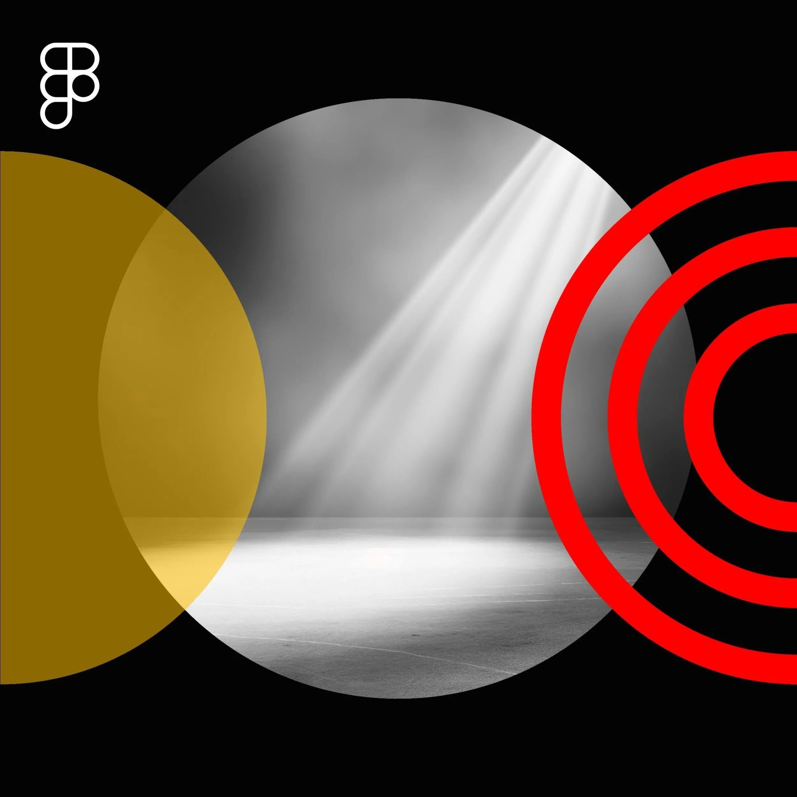

Occasional insights.
No spam, just the good stuff.
On AI-enabled design, leadership, and organizational transformation. The stuff I'd send a smart friend.
Perspective

Design teams may be looking at Figma Make as just another cool prompt-to-code tool. But they may be missing the bigger picture.
After many years of scaling design organizations and seeing the same friction points over and over again, I'm convinced that Figma Make is more than just a shiny new object. It's a catalyst for fundamentally changing how design teams operate and deliver value. The real opportunity isn't in the technology itself. It's in how Figma Make can eliminate friction that's been holding design teams back for decades.
If you're a design leader, you likely know some of these pain points all too well.
You spend more time creating presentations about design than actually designing products. I've seen teams lose days preparing stakeholder decks instead of solving business and user problems. Sound familiar?
The endless back-and-forth between design and development about technical feasibility. Ideas sometimes get watered down or abandoned before anyone really explores what's possible.
Stakeholders struggle to understand complex interactions from flat screens. Good ideas die because they can't be experienced, only explained. Or there's a misalignment in expectations.
In consultancy work, there's sometimes a gap between showing a concept and getting approval to build it. Teams get stuck in revision cycles because stakeholders can't always effectively visualize what the end result will be.
These aren't tool problems. They're organizational problems, and now we have a tool that can actually solve them. My new bestie, Figma Make, powered by my other long-time bestie, Claude: a true friendship match made in heaven.
I've heard a lot of design leaders talk about how great Figma Make is, but not all are clear on potential use cases for it. Truthfully, I was a bit of a deer in the headlights when alpha testing the product as well. But since Config, I've done some thinking and brainstorming, as we designers often do, and chatting with other design leaders. Here I share a few applications that could create meaningful organizational impact.
Build working demos for board presentations and strategic planning sessions. Nothing communicates vision like an experience you can actually see and potentially use. No more abstract explanations about what user flows might look like, show them the flow.
For agencies and consultancies, Figma Make could help replace lengthy proposal processes with interactive proof-of-concept projects, think show, don't tell. Imagine walking into a pitch with a working prototype instead of a deck full of what's been done before.
For in-house design teams, try collaboratively using Figma Make to create prototypes that design, product, engineering, and business teams can all contribute to. Break down those department silos through shared understanding. When everyone can click through the same experience together, conversations start to change.
Build interactive examples that show teams exactly how design decisions impact user experience. Make the abstract concrete. Instead of sending style guides that collect digital dust, send working examples teams can immediately understand.
Test concepts with users and stakeholders before committing to full development cycles. Fail fast, learn faster. Get real feedback on real interactions, not theoretical ones.
The teams that figure this out first will have a significant advantage. Not because they have better tools, but because they'll fundamentally change how their organizations think about design's role in business success.
Here are the questions I think you should be asking yourself:
Don't start with the technology, start with your biggest organizational pain point. Is it stakeholder buy-in? Client approval? Design-development handoffs? Alignment around design systems?
Pick one friction point, experiment with Figma Make as a solution, and measure the organizational impact. Then scale what works. Become the design team that moves faster, communicates more effectively, and delivers more strategic value than ever before.
The opportunity window is now. While most teams are still figuring out what Figma Make does, smart design leaders are figuring out how it transforms what design teams can be. That's the real transformation hiding in plain sight.
On AI-enabled design, leadership, and organizational transformation. The stuff I'd send a smart friend.